DOCUMENT
원본 제안서, 여기서 바로
아래 웹페이지의 모든 내용이 나온 원본 문서입니다. 카드를 누르면 PDF처럼 위아래로 넘겨 볼 수 있고, 페이지 목록에서 원하는 장으로 바로 갈 수 있습니다.
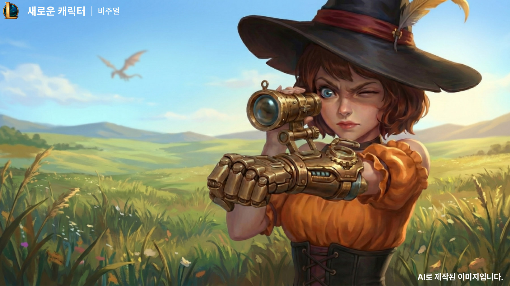
아래 웹페이지의 모든 내용이 나온 원본 문서입니다. 카드를 누르면 PDF처럼 위아래로 넘겨 볼 수 있고, 페이지 목록에서 원하는 장으로 바로 갈 수 있습니다.
원본 제안서 전문 펼쳐 보기 →시즌 4부터 매 시즌 200판 — 취향이 아니라 관측량으로 골랐다.
정글러는 게임의 기획자와 같다.
원본 P.03
원본 P.03 「니달리 숙련도 · 플레이 기록」 표기를 그대로 옮김.
OBSERVED가장 오래 한 게임이자 가장 오래 라이브된 게임 — “기획의 역사도 길고 기획 변화도 많았다”는 것이 선정 이유다. 확인하려는 것은 둘, 사냥꾼 서사가 챔피언 설계에 어떻게 반영됐는지와 그것이 플레이 경험으로 일관되게 전달되는지다.
니달리는 야생 속 ‘사냥꾼 / 수호자’를 → ‘마법 세계관 속 사냥꾼’으로 번역됩니다. (P.04 원문)
키워드 4개 중 ‘보호’만 버튼이 되지 못한 채 철학으로 남아 있었다.
OBSERVED원본은 니달리의 스토리에서 변신 · 민첩성 · 보호 · 사냥과 추적 네 키워드를 뽑아, 각 키워드가 어느 스킬 슬롯에 앉았는지까지 표로 만들었다.
| 키워드 | 역할과 의미 | 적용 대상 |
|---|---|---|
| 추적 (Hunt) | 먹잇감 표식과 위치 추적 | 창 투척(Q), 매복 덫(W), 패시브 |
| 사냥 (Hunting) | 사냥의 전 과정 재현, 포식자의 본능 | 쿠거 폼 스킬(급습, 숨통 끊기 등) |
| 변신 (Shapeshifting) | 인간과 야수 형태 간 변화, 이중성 | 궁극기(R) |
| 민첩성 (Agility) | 순간 폭발적 이동, 사냥 감각 | 쿠거 폼 급습(W), 패시브 수풀 이동 속도 증가 |
| 보호 (Protection) | 영역과 가족 수호, 적에 대한 경계 | 근본적 설계 철학 |
출처: 원본 P.06. 키 배치(Q·W·R) 표기도 원본 그대로.
‘보호’만 적용 대상이 스킬이 아니라 “근본적 설계 철학”이다. 나머지 셋은 버튼으로 내려왔는데 보호만 그러지 못했다.
다재다능함은 스킬 개수가 아니라 같은 스킬을 읽는 폭에서 나온다.
두 축 위에 변신 메커니즘과 민첩성(패시브)이 폼과 무관하게 얹힌다 — 원본 P.07 우측 정리.
INFERRED창투척과 매복 덫이 양쪽에 모두 등장한다. 창을 던져 못 오게 하면 수호이고, 같은 창으로 멀리서 끝내면 사냥이다. 스킬이 두 벌이 아니라, 같은 스킬을 어떤 목적으로 쓰느냐가 갈린다.
‘추적’은 도망치는 적이 있어야 성립한다 — PVE용 몰이사냥꾼으로 바꿨다.
니달리의 대표적인 아키타입은, 변신하는 “추적자/사냥꾼이자 수호자”입니다.
OBSERVED두 축을 벤 다이어그램으로 겹치면 추적자 쪽엔 넷, 수호자 쪽엔 둘뿐이다 — 원본의 진단은 “추적자/사냥꾼에 메커니즘이 몰려 있습니다. 특히 추적은, 도망치는 적이 없는 MMORPG(PVE)엔 어울리지 않는 아키타입이죠.”
PROPOSED결론은 “변신하는 ‘몰이사냥꾼’ 아키타입”. 재정의된 아키타입은 원소별 마도구 “마법사의 덫”을 주로 활용한다.
INFERRED ‘추적’은 적이 도망친다는 전제 위에서만 성립한다. PVE의 몬스터는 달려든다 — 전제가 사라지면 그 위의 스킬 문법도 무너진다.
쿠거 변신을 빙의술로 번역 — 몸의 마나 전량이 변신에 묶인다.
PROPOSEDSuzi(원본에서도 가명)는 가난한 농부 출신으로 마나를 다룰 줄 모른다 — 원본의 괄호 한 줄은 “(사실 못 다룹니다.)” 늦은 나이에 마법학교에 들어가 마공학으로 그 부족함을 메웠다. 원장이 찾아낸 기밀에 따르면 이것은 빙의술사의 특징으로, 그 일족은 환수종 정령을 불러내기 위해 몸의 마나 전량을 쓰기에 몸에서의 마나 사용이 금지돼 있다.
숲에서 자란 시절의 실루엣.
팔의 마공학 건틀릿과 화력 장비. 마나를 쓰지 못하는 대신 기계가 그 자리를 채운다.
허리 파우치 — 덫과 소모품을 들고 다니는 사냥꾼의 차림.
원본 P.10 「컨셉과 비주얼」의 주석 3개. 해당 슬라이드의 일러스트는 AI 생성 이미지다.
PROPOSED가난한 집안이라 숲 속에서 생활했고, 일상이 사냥의 반복이었다. 따라서 덫 설치 방법을 어렸을 때부터 익혔다. 부모는 왜인지 모르게 마법에 부정적이었고, Suzi에게 그 어떤 마법 정보도 닿지 못하도록 차단시켰다.
어느 날 “귀한 손님이 찾아왔다”며 잠시 나가 있으라는 부모의 말에 밖에 사냥을 다녀왔지만, 집은 박살나 있었고 거대한 발톱 자국만 남은 채로 가족은 사라졌다. 이틀 뒤, 거대한 마나 충돌을 느끼고 조사를 나온 마법학교 원장에게 거두어진다.
INFERRED빙의술은 쿠거 변신을 마법 세계관 문법으로 번역한 대응물이다. 니달리가 스스로 짐승이 되었다면, Suzi는 환수종을 실체화시켜 그쪽으로 넘어간다. ‘몸에 마나가 가득한데 쓸 수 없다’는 설정은 변신에 자원 전량이 묶여 있다는 규칙을 세계관 언어로 먼저 선언해 둔 것이다.
| 니달리 (원작) | Suzi (제안) | 번역된 지점 |
|---|---|---|
| 쿠거 변신 (R) | 빙의술 / 빙의해제 | 두 벌의 스킬셋을 오가는 폼 전환 구조 |
| 매복 덫 (W) | 덫 설치 — 원소별 “마법사의 덫” | 공간을 미리 준비해 두는 사냥법 |
| 패시브 (수풀 이동·민첩) | 사냥꾼의 마공학 신발 | 민첩 + 은신에 가까운 접근 자유도 |
| 쿠거 폼 스킬 (숨통끊기·급습·할퀴기) | 환수종 스킬 (물어뜯기·밀치기·포효) | 포식자 폼의 근접 교전 세트 |
INFERRED 이 대응표는 원본에 표 형태로 존재하지 않는다. 원본 P.05·P.07(니달리)과 P.12·P.14(Suzi)의 항목을 이 페이지에서 나란히 놓은 것이다.
원본 P.12는 Suzi를 두 축으로 나누어 그린다. 하나는 빙의술사 — “새롭게 터득한 빙의술사로서의 자신 / 환수종을 실체화시킨 모습”. 다른 하나는 몰이사냥꾼 — “기존의 덫 사용 사냥법에 마공학을 접합한 사냥꾼으로서의 특성”. 니달리의 두 폼이 그대로 두 축으로 옮겨 온다.
공포를 이동 명령으로 써서, 미리 깔아 둔 덫으로 몬다.
마공학 신발은 기본적으로 민첩함을 제공하며, 플레이어의 기척을 지우기 때문에 시야에 완전히 들어오지 않는 이상 몬스터는 플레이어를 인지하지 못한다.
체내 모든 마나는 빙의술에 사용하기 위해 별도로 사용이 금지된다. 설정이 그대로 자원 규칙이 된 경우다.
해당 캐릭터는 인간 형태일 때의 스킬 “덫 설치”가 사냥 메커니즘의 메인이다. 빙의술을 사용하여 변환된 환수종의 스킬들로 직접적인 사냥도 가능하며, 미리 설치한 덫으로 몰아가는 몰이 사냥도 “포효”와 “밀치기” 스킬로 가능하게 된다.
| 스킬 | 효과 | 역할 |
|---|---|---|
| 대쉬 | — | 몰이 중 반대편으로 빠지는 이동기 |
| 덫 설치 | 원소별 덫을 제작·투척해 설치 | 사냥 메커니즘의 메인 |
| 그물 발사 | 슬로우 효과 | 몰이 속도 조절 |
| 빙의술 / 빙의해제 | 환수종을 실체화 / 해제 | 폼 전환 |
| 물어뜯기 | 단일 공격, 출혈 효과 | 환수종의 직접 사냥 |
| 밀치기 | 넉백 + 공포 효과 | 몰이 |
| 포효 | 공포 or 도발 효과, 자신에게는 공격력 버프 | 몰이 |
스킬명·효과는 원본 P.14 표기 그대로. INFERRED ‘역할’ 열은 각 스킬이 P.15 플로우에서 쓰이는 자리를 이 페이지에서 정리한 것이다.
PROPOSEDEL 세계관에 존재하는 원소 가짓수만큼 덫의 종류가 존재하며, 각 원소의 특성을 활용하여 사냥을 진행한다. 미리 제작해놓은 덫을 활용하기도 하고, 전장에서 즉시 제작 후 투척도 가능하다. (‘EL 세계관’은 원본 표기 그대로다.)
원본 플로우는 덫 선택 UI 이후 제작 → 조준 → 투척 경로와 조준 → 투척 경로 두 갈래로 갈린다. 미리 만들어 둔 덫이 있으면 제작 단계를 건너뛴다.
원본이 덧붙인 조건 한 줄 — “골목 등 지형지물을 잘 활용해야 할 것이다.” INFERRED ②가 성립하는 이유가 패시브(기척 제거)라는 연결은 이 페이지에서 붙인 설명이다.
INFERRED이 루프에서 공포는 이동 명령이다. 니달리의 ‘추적’이 적에게 다가가는 동사였다면, Suzi의 ‘몰이’는 적을 밀어내 내가 미리 준비한 자리로 보내는 동사다.
버린 안 둘과 그 이유까지 남겼다 — 결론은 변신 마나 비용 인상.
OBSERVED원본 P.14의 원문 — “쿨타임을 많이 부여하는게 맞다고 생각했지만, 그렇게 되면 플레이어의 ‘사냥 재미’가 반감될 것이 우려된다. 그렇다고 환수종의 데미지를 내리고 데미지 강도를 덫에 집중시키면, 개연성에 어긋난다.”
빙의술을 마무리기로 규정하고 쿨타임을 크게 준다. 강력한 폼 전환의 무게는 지켜진다.
✕ 폐기 — 빙의술을 쓰는 빈도가 줄면 ‘사냥 재미’가 반감된다환수종의 데미지를 낮추고 강도를 덫에 집중시켜, 빙의술을 자주 써도 부담이 없게 한다.
✕ 폐기 — 개연성에 어긋난다어떤 안을 왜 버렸는지가 남아 있으면, 뒤에 오는 사람이 같은 논의를 반복하지 않아도 된다.
INFERRED 이 선택이 앞뒤가 맞는 이유는 패시브 2번에 이미 깔려 있다 — 체내 마나 전량이 빙의술에 묶여 있다는 설정. 쿨타임(시간)이나 데미지(수치)를 건드리면 세계관 설명이 새로 필요하지만, 마나 비용은 이미 존재하는 규칙의 손잡이다. 시스템 제약을 서사에서 먼저 빌려 온 셈이다. — 이 문단은 원본에 없는 이 페이지의 해석이다.
OBSERVED원본 P.15의 원문 — “환수종보다 급이 낮은 몬스터들에게 기본 공포 적용 → 항상 반대편으로 도망”. 원본은 이 항목을 「고민」으로 남겨 두고 채택 여부를 적지 않았다.
INFERRED 결론이 없는 채로 남아 있는 것이 이 칸의 성격에 맞다. 몰이가 자동으로 걸리면 조작이 편해지지만, 동시에 플레이어가 몰이를 ‘설계’할 여지가 줄어든다 — 앞의 ISSUE 01과 정확히 같은 종류의 딜레마(강해지는 것과 재미가 반대로 가는 상황)라, 원본이 두 칸을 나란히 둔 배치가 자연스럽다. — 이 관찰 역시 이 페이지의 해석이다.
‘얼마나 알아냈는가’가 곧 전투력이고, 엔딩 3개의 조건이 된다.
→ 전쟁의 전조 발견 · 빙의술사 가치에 대한 이해
→ 습격의 현장에서 두 가지 단서를 발견
→ 부모님의 경유 흔적 발견, 최종행방은 적국
→ 적국의 사주임을 알아냄 · 전쟁의 전조 발견
원본 차트에서 두 서브 퀘스트는 병행 가능하고, 노예시장·용병단 조사는 두 루트의 결과와 서로 교차 연결된다.
사건 이해도와 전투력은 비례한다. 이는 엔딩 조건과 게임 난이도에도 영향을 미친다. (P.13 원문)
부모님께 빙의 해제술 강행 · 적국을 모두 물리침
→ 해피엔딩아군 적군을 모두 사살하고 부모님을 제압 후 대피
→ 노멀엔딩전쟁 속 어떤 형태 / 상황 속에서 플레이어가 사망하는 엔딩
→ 배드엔딩INFERRED 원본이 명시한 조건은 case 1의 “사건 이해도 90% 이상 + 전투력 조건”뿐이다.
INFERRED조사 루트를 더 돈 플레이어가 더 좋은 엔딩을 볼 자격과 그럴 힘을 동시에 얻는다 — 벌점 대신 이해도를 성장 곡선에 얹은 설계다.
원작 관찰과 제 해석 · 창작을 세 칸으로 갈라 적었습니다.
키워드 추출과 불균형 진단은 저의 해석이고, 제안 쪽은 전부 창작입니다. 원본이 정한 것은 방향이지 값이 아닙니다.
이 페이지의 모든 내용이 나온 원본 문서입니다. 표지부터 마무리까지 16장 전부를 실었습니다. 클릭하면 확대되고, 좌우 화살표·키보드·스와이프로 넘길 수 있습니다. P.09·P.10의 캐릭터 일러스트는 AI로 제작된 이미지이며, 원본 P.09에도 그렇게 표기돼 있습니다(썸네일의 · AI 표시).
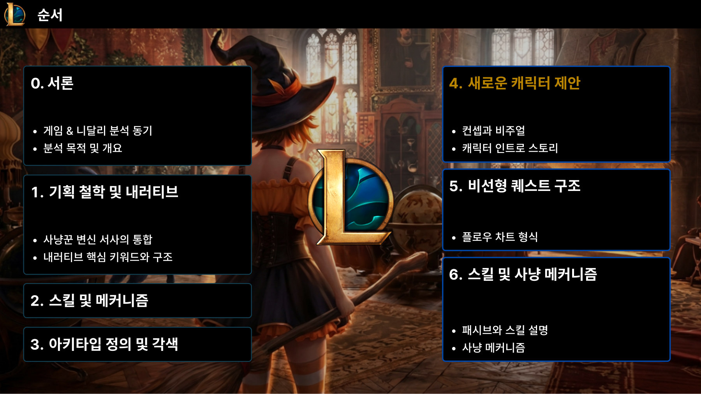
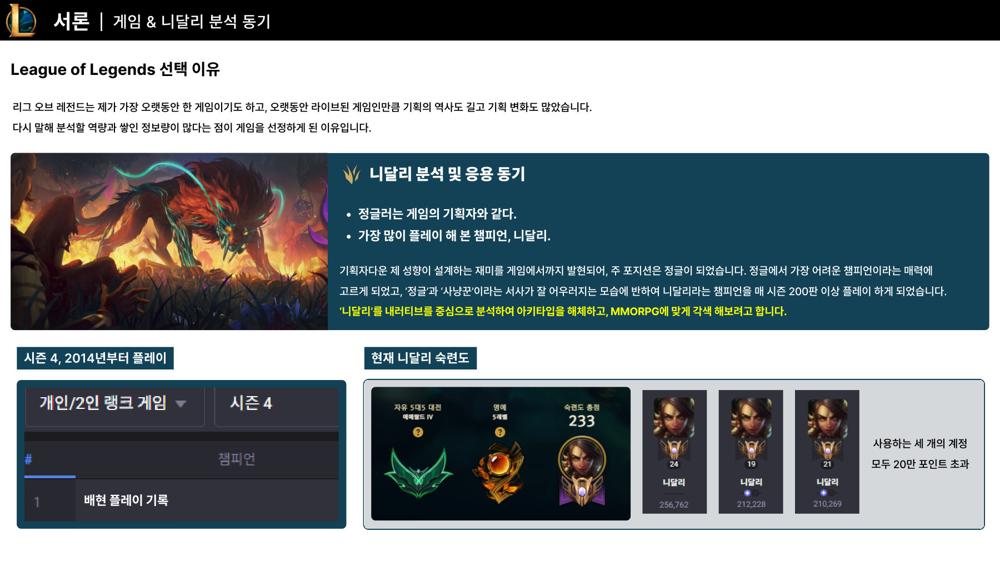
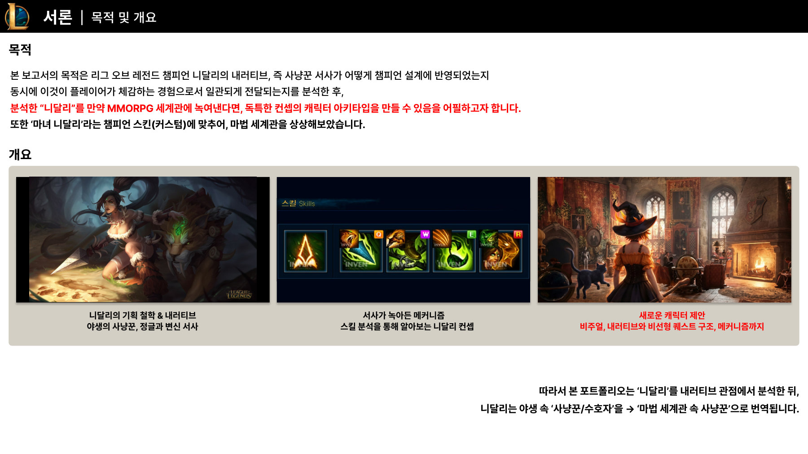
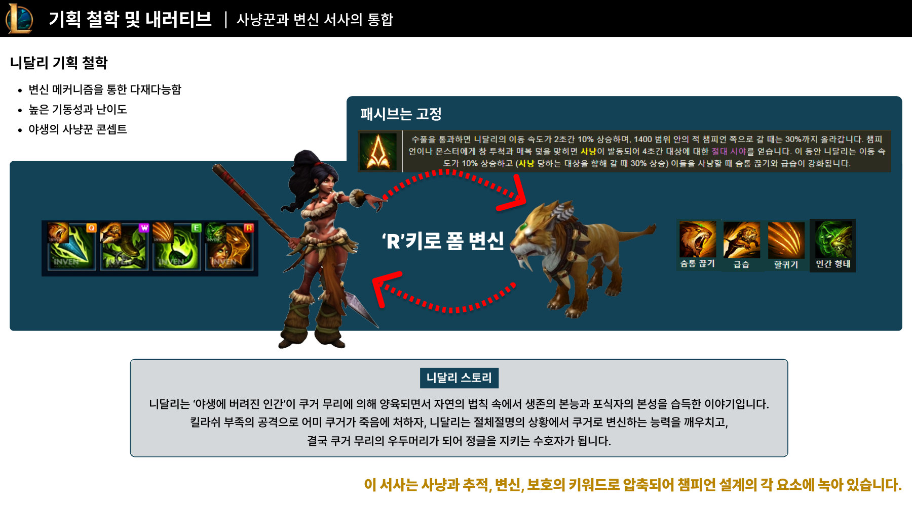
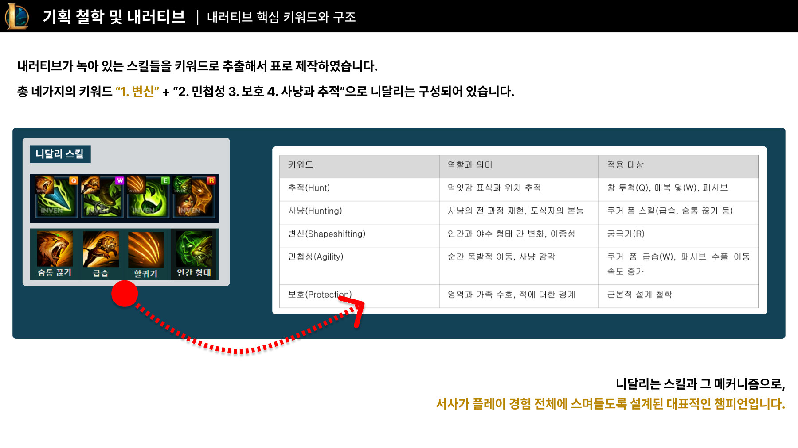
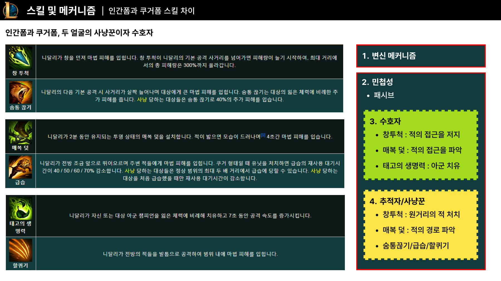
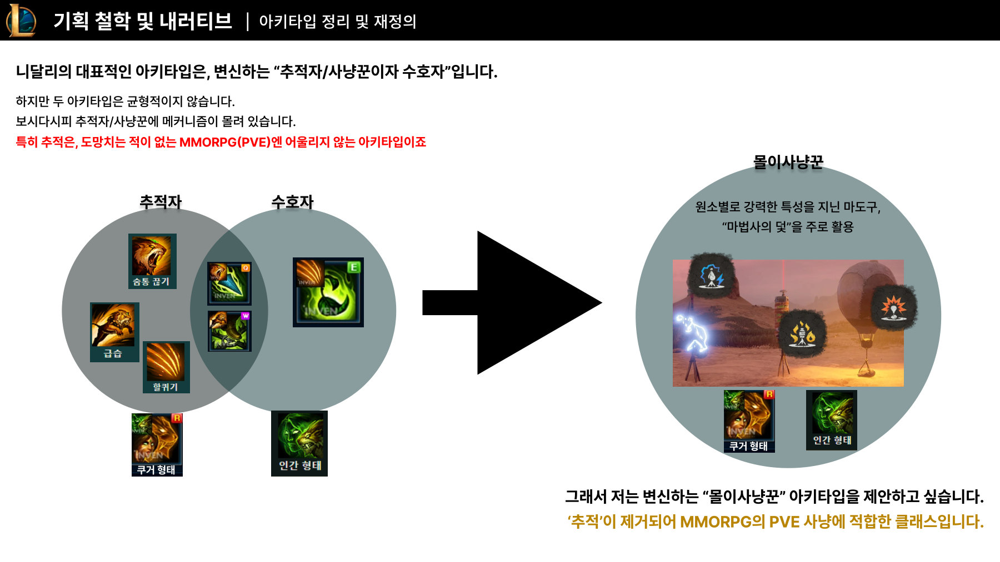
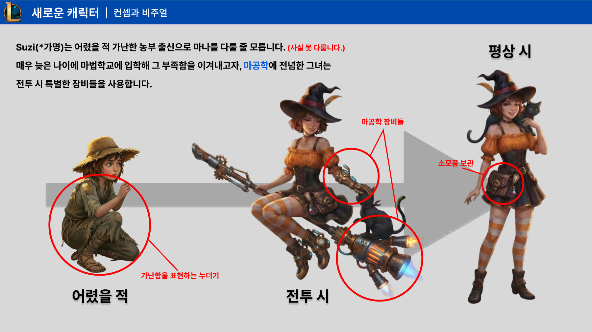
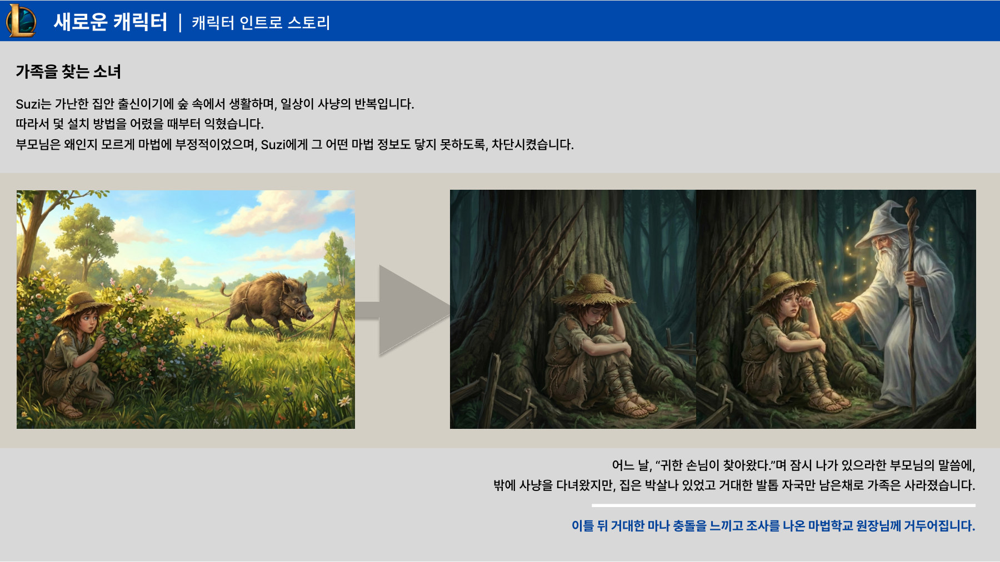
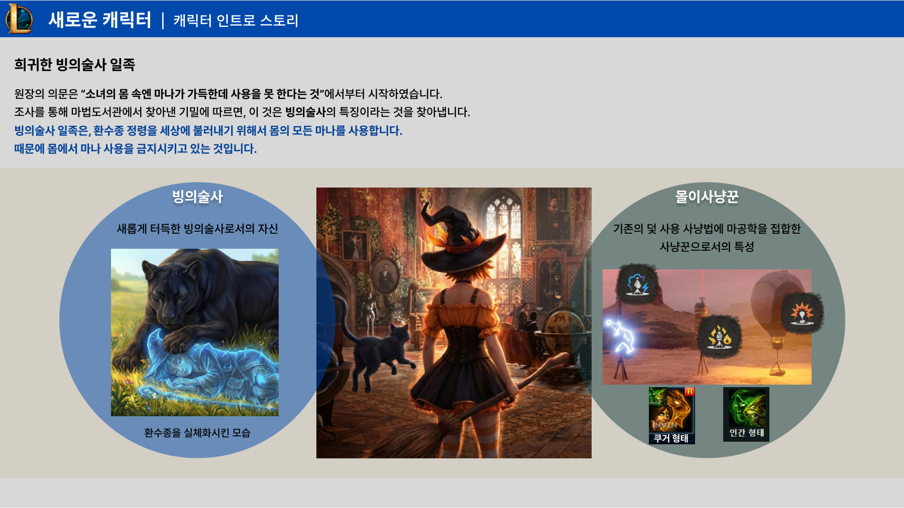
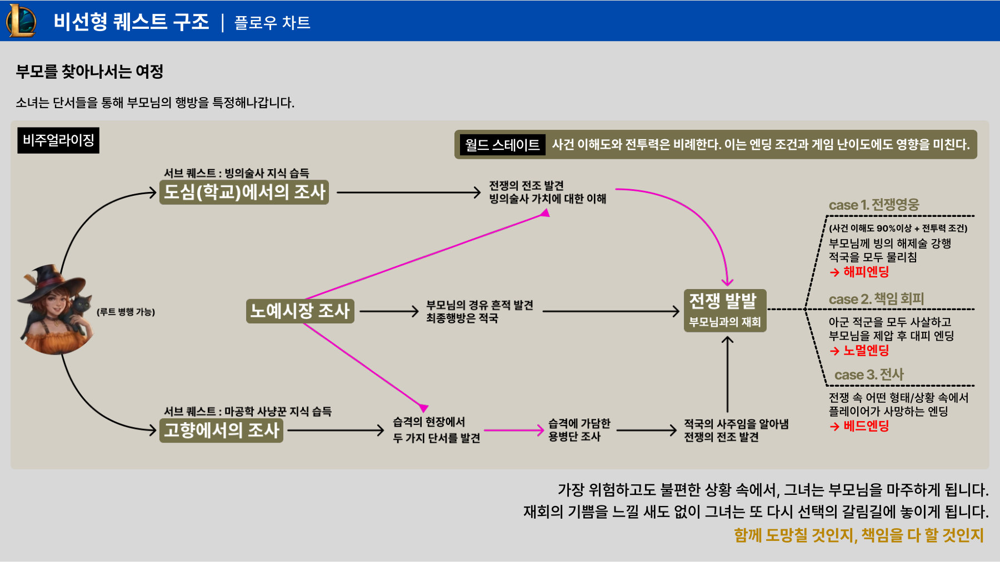
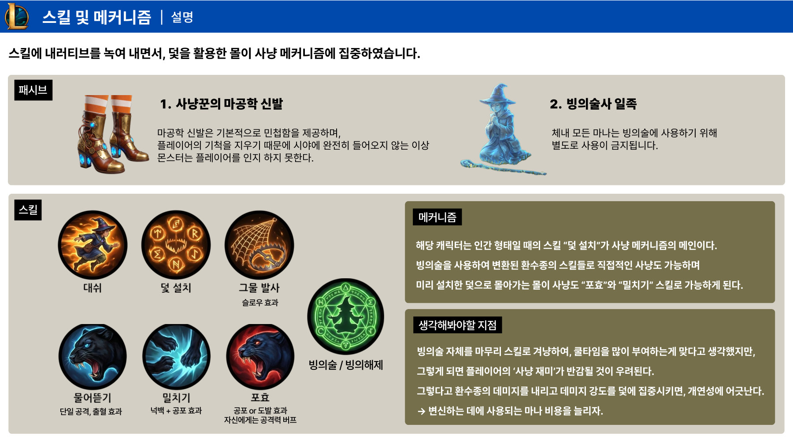
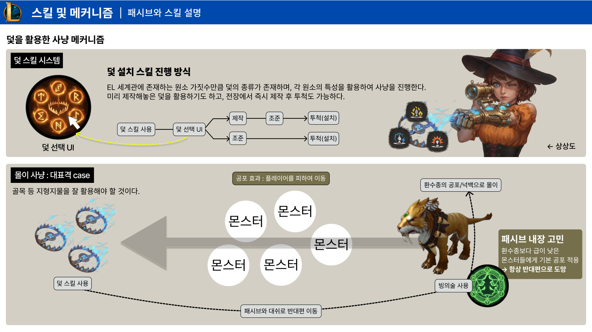
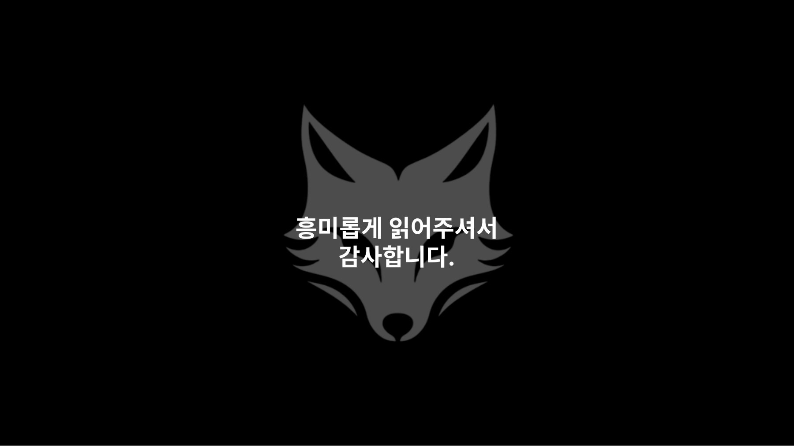